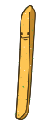
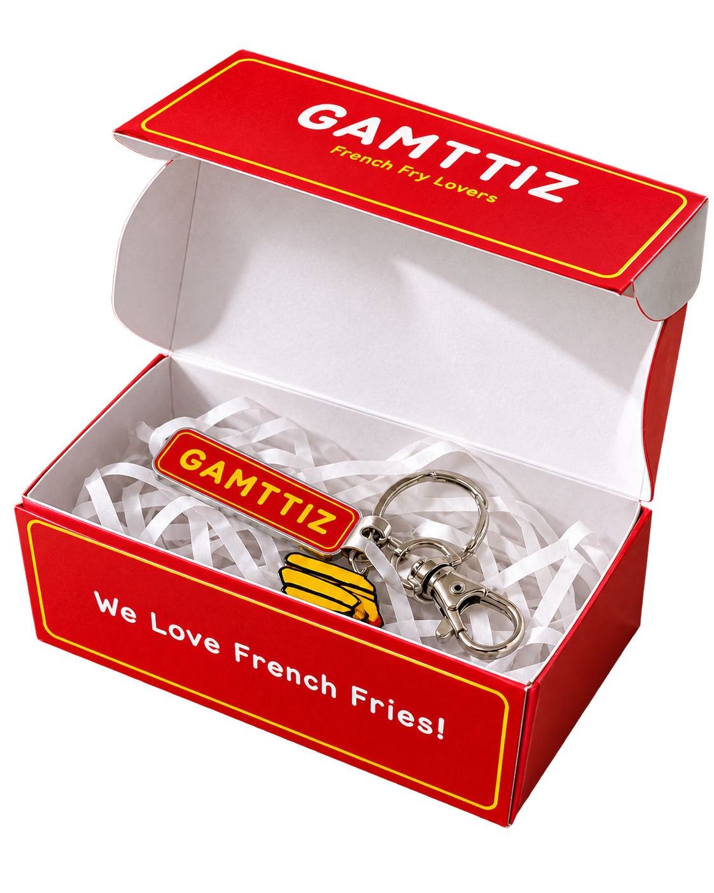

PROJECT INFO
감자튀김을
좋아하는 사람들.
감띠즈는 감자튀김을 좋아하는 애호가들을 위한 캐릭터 브랜드입니다. 직접 감자튀김을 먹고 즐기며 발견한 다양한 특징을 캐릭터로 만들어, 애호가들에게 공감을 전하고 아직 잘 모르는 사람들에게는 감자튀김의 매력을 소개하고자 시작했습니다.


CHARACTER DESIGN
먹고, 발견하고,
캐릭터로 만들다.
감자튀김을 먹다 보면 모양도, 맛도, 튀겨진 정도도 저마다 다르다는 것을 알게 됩니다. 그런 순간의 특징을 그대로 살려 각자의 이름과 표정을 가진 캐릭터로 표현했습니다.


CHARACTERS
16가지 감자튀김, 16명의 감띠.
일상에서 마주치는 차이를 간결한 실루엣과 표정으로 표현했습니다. 캐릭터의 이름과 이야기도 실제 감자튀김의 특징에서 출발합니다.
VISUAL IDENTITY
감자튀김의 색으로
만든 브랜드.
감자튀김을 떠올리게 하는 노란색과 빨간색을 중심으로, 감띠즈 전용 영문 글꼴과 간결한 그래픽을 사용했습니다. 캐릭터와 굿즈, 패키지에서 동일한 인상을 유지하도록 표현했습니다.
PACKAGE DESIGN
감띠즈를 담는 상자.
감띠즈의 키링을 랜덤박스에 담아 어떤 캐릭터를 만날지 기대하는 즐거움을 만들었습니다. 로고, 전개도와 네임텍까지 하나의 브랜드로 연결했습니다.



기본 감띠 일러스트 규격 20 × 50 mm · 기존 디자인 기준
PRODUCT DESIGN
좋아하는 마음을
일상으로.
캐릭터 일러스트를 아크릴 키링으로 만들고, 감자튀김 용기를 닮은 홀더에 모아 함께 즐길 수 있도록 디자인했습니다. 감자튀김을 좋아한다는 취향을 일상에서 작게 표현할 수 있는 굿즈입니다.

GAMTTIZ
함께 즐기는
감자튀김의 매력.
감자튀김을 좋아하는 사람들이 서로 공감하고, 더 많은 사람들이 감자튀김의 다양한 모습을 알아갈 수 있기를 바랍니다.
Design & Illustration · 채민석